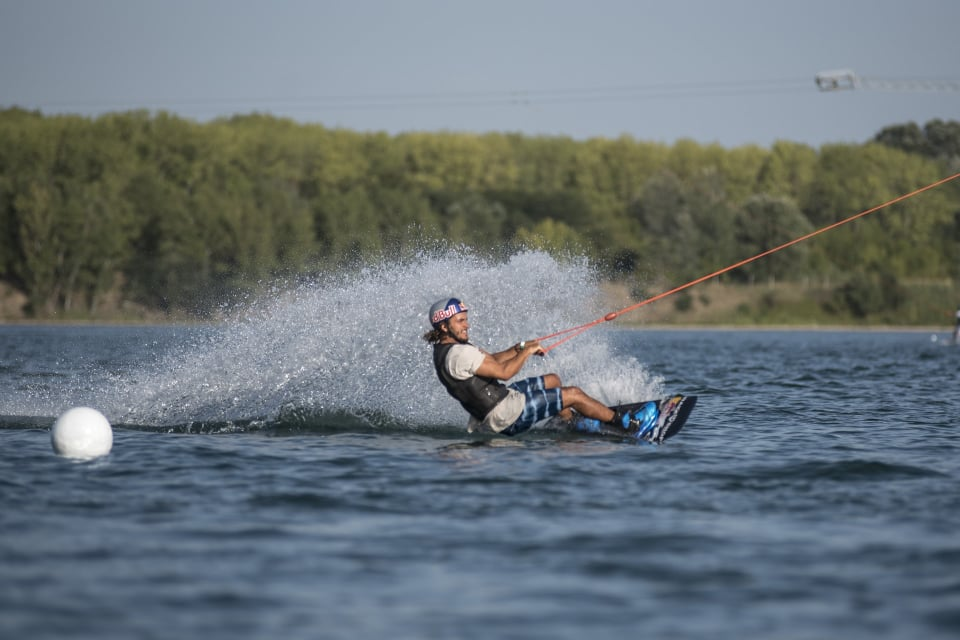

A wakeboard egy vízi sport, amelyben a vezető wakeboardon (rövid deszkán lábkötéssel) állva egy motorcsónak mögé vontatott a nyomában, és különösen a címerről, hogy légi manővereket hajtson végre. A wakeboard sajátossága a levegőben végzett trükkök megkísérlése. A wakeboardot vízisí, snowboard és szörf technikák kombinációjából fejlesztették ki. A motorost általában egy csónak mögött kötél vontatja, de kábelrendszerekkel és csörlőkkel is vontatható, valamint más motoros járművek, például vízi járművek, autók, teherautók és terepjárók is vontathatják. A használt felszerelést és wakeboard hajót gyakran személyre szabják az egyes versenyzők ízlése szerint. Bár a wakeboardban általában természetes vízfolyásokat, például folyókat, tavakat és nyílt vizeket használnak, lehetséges a wakeboard nem szokványos helyeken, például elárasztott utakon és parkolókban, autóval vontatójárműként. A wakeboard egy vízi sport, amelyben a vezető wakeboardon (rövid deszkán lábkötéssel) állva egy motorcsónak mögé vontatott a nyomában, és különösen a címerről, hogy légi manővereket hajtson végre. A wakeboard sajátossága a levegőben végzett trükkök megkísérlése. A wakeboardot vízisí, snowboard és szörf technikák kombinációjából fejlesztették ki. A motorost általában egy csónak mögött kötél vontatja, de kábelrendszerekkel és csörlőkkel is vontatható, valamint más motoros járművek, például vízi járművek, autók, teherautók és terepjárók is vontathatják. A használt felszerelést és wakeboard hajót gyakran személyre szabják az egyes versenyzők ízlése szerint. Bár a wakeboardban általában természetes vízfolyásokat, például folyókat, tavakat és nyílt vizeket használnak, lehetséges a wakeboard nem szokványos helyeken, például elárasztott utakon és parkolókban, autóval vontatójárműként.
